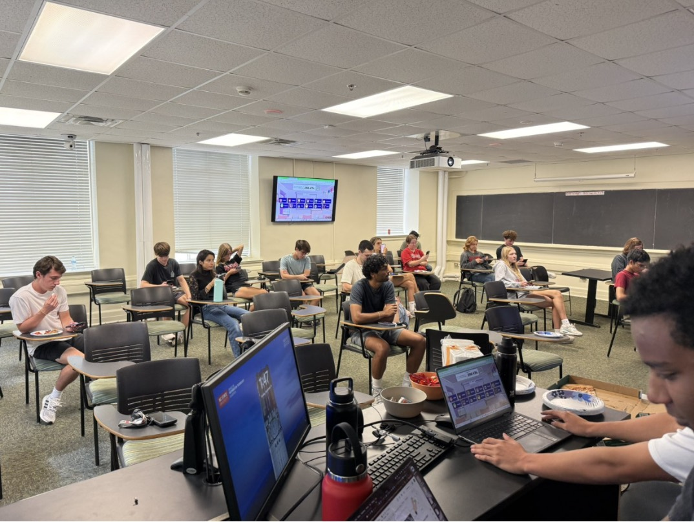
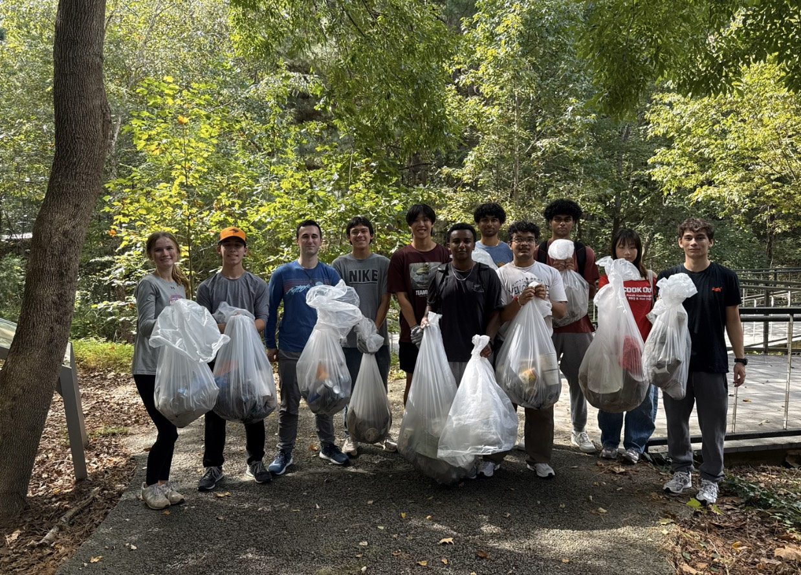
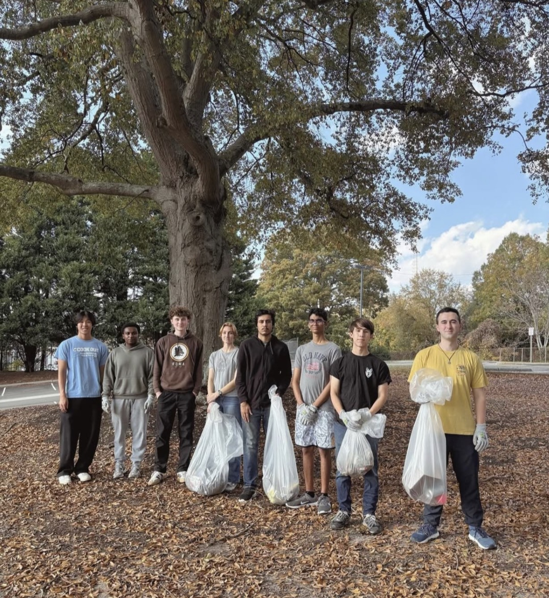

Purpose
Outdoor work, campus care, and people who show up.
Students for Sustainability at NC State is a student-led organization dedicated to promoting environmental stewardship and community engagement on and around NC State's campus. We bring students together to clean up trash, promote recycling, and host sustainability education events that inspire awareness and action. Our members make a tangible impact while enjoying the outdoors, developing leadership skills, and connecting with like-minded peers.
What we’ve done
A semester you can weigh.
30.1 lbs
Trash collected
9.25 lbs
Recyclables collected
This past semester, our organization made a measurable impact on campus sustainability by collecting 30.1 lbs of trash and 9.25 lbs of recyclable materials.
We also hosted engaging General Body Meetings featuring sustainability-focused educational games and interactive activities that encouraged hands-on learning.
In collaboration with the Environmental Justice Club at NC State, we worked to raise awareness about the environmental risks and impacts of AI data centers.

Get involved
Show up. We’ll take it from there.
Follow us on Instagram, LinkedIn, or join the Discord.
On campus
Events
Upcoming
Our first cleanup event of the new semester is scheduled for mid to late January.
Past cleanups
Volunteer Cleanup at The Beaver Creek on Sullivan St. on November 9th, 2025!

Volunteer Cleanup in a forest area on Centennial Campus on October 5th, 2025!

Live data
Campus conditions
Live weather and air quality for NC State, so you can plan for outdoor cleanups.
Loading campus weather…
Play
The game
Eco Catch. Move to grab food and recycling. Let the trash hit the ground.
Arrow keys or A/D to move · Space to play · Drag on mobile
0